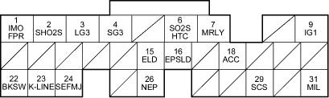

Fuel and Emissions Systems
|
11-14 |
ECM Inputs and Outputs at Connector E (31P)

Wire side of female terminals
NOTE: Standard battery voltage is 12 V.
| Terminal number | Wire colour | Terminal name | Description | Signal |
| 1 | GRN/YEL | IMO FPR (IMMOBILISER FUEL PUMP RELAY) | Drives PGM-FI main relay 2 | 0 V for two seconds after turning ignition switch ON (II), then battery voltage |
| 2 | WHT/RED | SHO2S (SECONDARY HEATED OXYGEN SENSOR, SENSOR 2) | Detects Secondary HO2S (sensor 2) signal | With throttle fully opened from idle with fully warmed up engine: above 0.6 V
With throttle quickly closed: below 0.4 V |
| 3 | BRN/YEL | LG3 (LOGIC GROUND) | Ground for the ECM/PCM control circuit | Less than 1.0 V at all times |
| 4 | PNK | SG3 (SENSOR GROUND) | Sensor ground | Less than 1.0 V at all times |
| 6 | BLK/WHT | SO2SHTC (SECONDARY HEATED OXYGEN SENSOR HEATER CONTROL) | Drives Secondary HO2S heater | With ignition switch ON (II): battery voltage
With fully warmed up engine running: duty controlled |
| 7 | RED/YEL | MRLY (PGM-FI MAIN RELAY) | Drives PGM-FI main relay 1
Power source for the DTC memory |
With ignition switch ON (II): battery voltage
With ignition switch OFF: about 0 V |
| 9 | YEL/BLK | IG1 (IGNITION SIGNAL) | Detects ignition signal | With ignition switch ON (II): battery voltage
With ignition switch OFF: about 0 V |
| 15 | GRN/RED | ELD (ELECTRICAL LOAD DETECTOR) | Drives ELD signal | With ignition switch ON (II): about 0.1 V - 4.8 V
(depending on electrical load) |
| 16 | LT GRN/BLK | EPSLD (ELECTRICAL POWER STEERING LOAD DETECT) | Detects power steering load signal | At idle steering wheel in straight ahead position: about 0 V
At idle with steering wheel at full lock: battery voltage momentarily |
| 18 | RED | ACC (A/C CLUTCH RELAY) | Drives A/C clutch relay | With compressor ON: about 0 V
With compressor OFF: battery voltage |
| 22 | WHT/BLK | BKSW (BRAKE PEDAL POSITION SWITCH) | Detects BPP switch signal | With brake pedal released: about 0 V
With brake pedal pressed: battery voltage |
| 23 | LT BLU | K-LINE | Sends and receives scan tool signal | With ignition switch ON (II): pulses or battery voltage |
| 24 | YEL | SEFMJ | Communicates with multiplex control unit | With ignition switch ON (II): about 5 V
With engine running with load: pulses |
| 26 | BLU | NEP (ENGINE SPEED PULSE) | Outputs engine speed pulse | With engine running: pulses |
| 27 | RED/BLU | IMOCD (IMMOBILISER CODE) | Detects immobiliser signal | |
| 29 | BRN | SCS (SERVICE CHECK SIGNAL) | Detects service check signal | With the service check signal shorted with the PGM Tester: about 0 V
With the service check signal opened: about 5 V battery voltage |
| 31 | GRN/ORN | MIL (MALFUNCTION INDICATOR LAMP) | Drives MIL | With MIL turned ON: about 0 V
With MIL turned OFF: battery voltage |